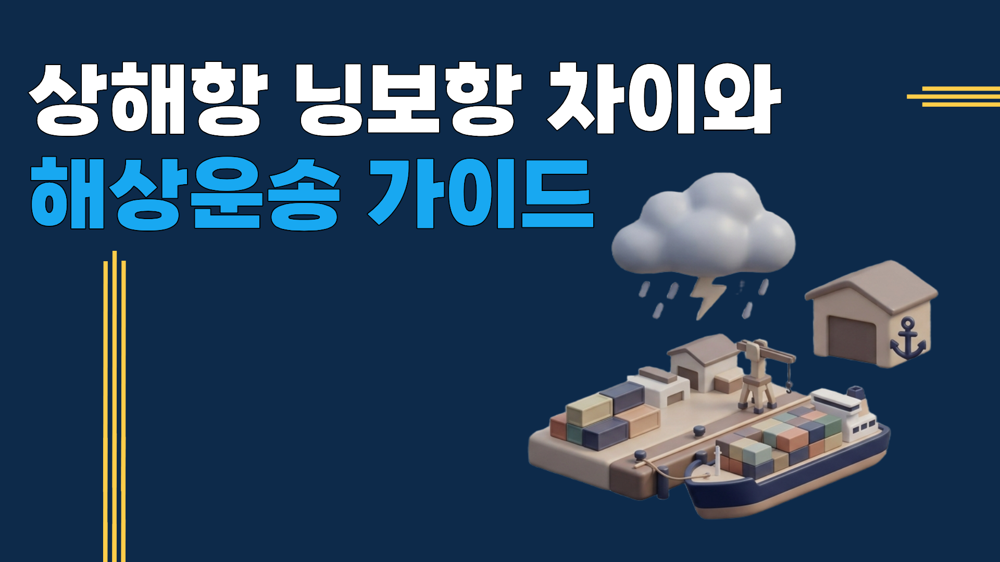

1. 상해항과 닝보항, 무엇이 다른가요
상해 닝보 해상운송은 두 항구 모두 화동 지역에 있어 지리적으로 가깝고, 평소에는 스케줄·운임 면에서 큰 차이가 없습니다. 상해항이 중국 최대 물동량 항구로 스케줄이 더 많고, 닝보항은 상해 혼잡 시 대체 항구로 주로 활용됩니다.
문제는 "평소"가 아니라 7~8월 태풍·해무 시즌입니다. 이 시기엔 두 항구의 차이가 실제 리드타임에 크게 영향을 줍니다.
이 글에서는 상해 닝보 해상운송의 기본 차이, 태풍철 주의점, 그리고 실제로 태풍 때문에 항구를 바꿔야 했던 사례까지 정리했습니다.
2. 상해항과 닝보항, 기본적으로 뭐가 다른가요
| 구분 | 상해항 | 닝보항 |
|---|---|---|
| 위치 | 화동 지역 | 상해 인근 화동 지역 |
| 물동량 | 중국 최대 | 상해 대비 적지만 충분히 풍부 |
| 스케줄 빈도 | 가장 많음 | 상해보다는 적음 |
| 한국행 리드타임(LCL) | 3~5일 | 3~5일 |
| 평상시 비용 차이 | 거의 없음 | 거의 없음 |
| 태풍철 결항 시 여파 | 대기 물량이 많아 재개 후에도 정상화까지 시간 소요 | 물동량이 상대적으로 적어 재개가 빠른 경우가 있음 |
표 아래 실무 변수: 태풍철 여파 차이는 매번 같지 않습니다. 태풍 경로·강도에 따라 두 항구 모두 동시에 통제되는 경우도 있어, 예약 시점의 실제 스케줄 확인이 표보다 중요합니다.
3. 7~8월 태풍·해무 시즌엔 뭐가 달라지나요
7~8월은 태풍과 해무(바다 안개)로 입출항 자체가 통제되는 날이 잦아지는 시기입니다. 상해항은 물동량이 많다 보니, 한 번 결항되면 밀린 화물이 몰려 재개 이후에도 정상 스케줄로 돌아오기까지 며칠 더 걸리는 경우가 있습니다.
🔵 이 시기엔 "평소 스케줄이 많은 항구"가 아니라 "지금 이 시점에 스케줄이 안정적으로 도는 항구"로 유연하게 선택하는 것이 핵심입니다.
일정이 타이트한 화물(전시회·행사용 물품, 마감일이 정해진 발송 등)이라면 특히 그렇습니다. 상해항 하나만 보고 예약했다가 태풍이 겹치면, 닝보항으로 옮길 타이밍마저 놓칠 수 있습니다.
4. 상해 닝보 해상운송, 이런 문제가 생깁니다
상해항 스케줄만 고집했다면 일정을 못 맞췄을 경우
2026년 8월, 일본 행사용 아이템을 한국으로 수입해야 했던 화주분이 계셨습니다. 원래는 상해항으로 진행할 예정이었지만, 8월 25일 태풍 3개가 연달아 북상하면서 상해항 스케줄이 불안정해질 것으로 판단해 위해항 훼리(카페리)로 대신 진행했습니다. 그 결과 행사 일정에 맞춰 화물을 무사히 소화할 수 있었습니다. 여담으로, 그대로 상해항으로 진행했다면 일주일 정도 지연이 있었을 것으로 파악됩니다.
"닝보로만 가면 무조건 안전하다"고 오해하는 경우
태풍 경로에 따라 상해·닝보 두 항구가 동시에 통제되는 경우도 있습니다. 무조건 닝보항이 정답은 아니고, 예약 시점의 실제 태풍 경로와 항구별 상황을 함께 봐야 합니다.
해무(바다 안개)를 태풍보다 가볍게 보는 경우
태풍만 신경 쓰다가 해무로 인한 입출항 통제를 놓치는 경우가 있습니다. 여름철엔 해무도 태풍 못지않게 스케줄에 영향을 줍니다.
| 상황 | 원인 | 결과 |
|---|---|---|
| 상해항만 보고 고정 예약 | 대체 항구(위해 등) 확인 없이 진행 | 태풍 겹칠 시 최소 1주일 이상 지연 가능 |
| 닝보항이 무조건 안전하다고 판단 | 태풍 경로 미확인 | 두 항구 동시 통제 가능성 간과 |
| 해무를 태풍보다 가볍게 취급 | 여름철 리스크 요인 누락 | 예상 못 한 입출항 통제 |
5. 자주 묻는 질문 (FAQ)
6. 투삼로지스와 진행하면 다른 점
투삼로지스는 상해 닝보 해상운송을 진행할 때 두 항구의 스케줄을 함께 확인합니다.
화물 정보와 희망 도착일만 알려주시면, 지금 시점 기준으로 더 안정적인 항구를 안내해드립니다.
 카카오톡
카카오톡
 네이버 블로그
네이버 블로그